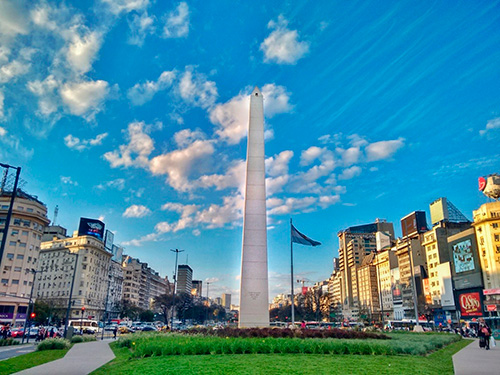
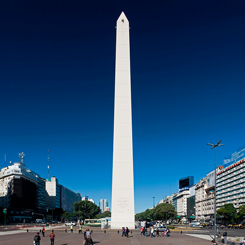
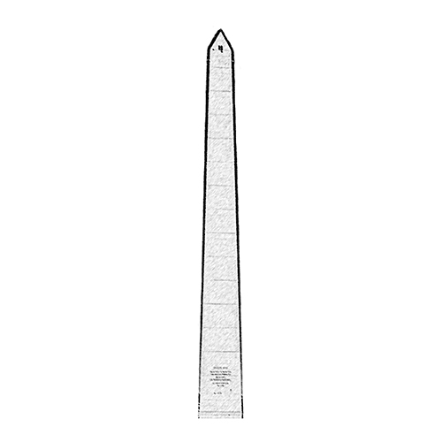
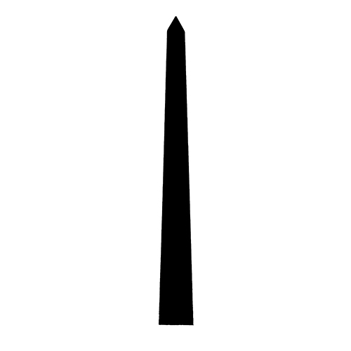
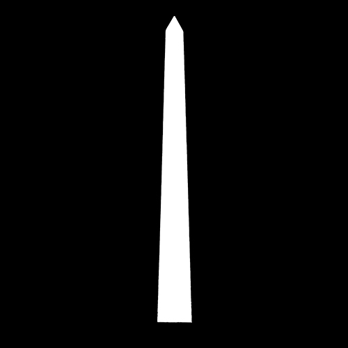
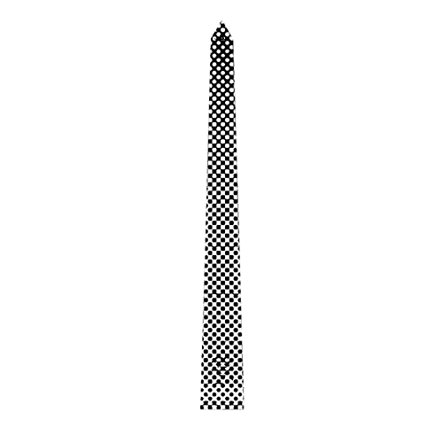

¿Qué es?
El Obelisco es, en todo el mundo, el mayor emblema de la ciudad y de sus
habitantes, como lo pueden ser
la Torre Eiffel en París o la Estatua de la Libertad en Nueva York. Inaugurado en 1936 para
recordar el
cuarto centenario de la primera fundación de Buenos Aires, es obra del arquitecto Alberto
Prebisch, uno
de los principales exponentes del modernismo argentino y autor también del vecino Teatro Gran Rex. Se
ubica en el lugar donde fue izada por primera vez la bandera nacional en la ciudad. Quien visita Buenos
Aires no puede dejar de fotografiar este monumento, ubicado estratégicamente en la intersección de dos
de las avenidas más importantes: la 9 de Julio, entre las más anchas del mundo, y la calle
Corrientes, uno de los principales polos culturales de la ciudad.
El Obelisco es, además, el eje del Metrobus, el sistema de transporte de colectivos que cruza el Microcentro por la Avenida 9 de Julio, inaugurado en el año 2013. Con una altura total de 67,5 metros y una base de 6,8 metros por lado, el Obelisco posee una única puerta de entrada (mirando hacia la Avenida Corrientes en dirección oeste), detrás de la cual hay una escalera marinera de 206 escalones con 7 descansos que lleva a la cúspide. Allí existe un mirador con cuatro ventanas, visibles desde la calle. Y por encima de ella, el monumento emblema de Buenos Aires culmina en un pararrayos que no logra divisarse a simple vista. Actualmente está prohibido el ingreso.
Historia
En el solar donde hoy se encuentra el Obelisco estaba emplazada la iglesia dedicada a San Nicolás de Bari, que se decidió demoler para la construcción de la Avenida 9 de Julio. Dicha circunstancia se recuerda en una de las inscripciones del lado norte del Obelisco. Se decía que el bloque radical de las cámaras presentaría un proyecto para que en ese lugar se erigiera el monumento a Hipólito Yrigoyen. Que no existe en la ciudad ningún monumento que simbolice el homenaje de la Capital de la Nación entera.
Alberto Prebisch fue uno de los principales arquitectos del modernismo argentino y autor
también del vecino Teatro Gran Rex. Con respecto al motivo de la forma del monumento
Prebisch dijo: Se adoptó esta simple y honesta forma geométrica porque es la forma
de los obeliscos tradicionales... Se le llamó Obelisco porque había que llamarlo de alguna manera.
Yo
reivindico para mí el derecho de llamarle de un modo más general y genérico «Monumento»
. La
construcción estuvo a cargo del consorcio Siemens Bauunion, Grün, Bilfinger, etc; el cual
finalizó la obra en el tiempo récord de 31 días, para la que empleó a 157 obreros.
Maximizando el aprovechamiento del tiempo se utilizó cemento Incor de endurecimiento rápido y se fue construyendo el monumento por secciones de 2 metros para facilitar el volcado del hormigón. Para su construcción, que costó 200.000 pesos moneda nacional, se utilizaron 680 m³ de cemento y 1360 m² de piedra blanca de Pampa de Olaen, provincia de Córdoba. El tendido de la línea B de subterráneos favoreció la construcción del monumento, pues facilitó la colocación de los cimientos sobre los túneles formándose la base de hormigón de 20 m de lado y 1,50 m de altura sobre vigas de 1,80 m de alto que se apoyan en los costados sobre zapatas del mismo material de 1,20 m de alto y de 3 m y 4 m de largo respectivamente. La losa plana del techo del túnel del subte permite el paso de la losa de fundación del obelisco.
Al quitarse las lajas no se tuvo en cuenta que se retiró una leyenda que decía Alberto Prebisch fue
su arquitecto
. Inmediatamente después de su construcción, el obelisco se tornó en centro de las
burlas y protestas de los porteños. Tres años después de su inauguración, en junio de 1939, el Concejo
Deliberante sancionó la demolición del Obelisco por Ordenanza, aduciendo razones económicas, de
seguridad pública, etc. Pero la ordenanza fue vetada por el intendente
Goyeneche y no prosperaron otras
tentativas por derribarlo.
El Obelisco ha sido frecuentemente utilizado como punto de reunión de diversas manifestaciones, las que abarcan también las avenidas 9 de julio y Corrientes que lo rodean, hecho similar al que ocurre en Plaza de Mayo.

Arquitectura
El obelisco es un trapecio de base cuadrada de 6,80 metros de lado, de 67,5 metros de altura, con una terminación en forma de pirámide. Su interior es hueco y alberga una escalera recta. Tiene una sola puerta de entrada en el lado oeste y en su cúspide hay cuatro ventanas. Originalmente revestido en piedra, se la reemplazó por revoque cementicio pintado de blanco, con buñas imitando planchas de piedra.

Ilustraciones
Obelisco - Original
Obelisco - Realista
Obelisco - Monge

Obelisco - Positivo
Obelisco - Negativo
Obelisco - Diferentes Grosores de Lineas

Obelisco - Linea Modulada

Obelisco - Linea Continua

Obelisco - Escala de Grises

Obelisco - Planos Blanco y Negro

Obelisco - Lineas y Planos

Obelisco - Trama
Obelisco - Colores de la Bandera

Contacto
Autor
Logo del Autor

Datos del Autor
Nombre: Tomás Agustín
Apellido: Friz
Fecha de Nacimiento: 5 de Julio de 1999
Edad: 22 Años
Mail: tomas.friz@davinci.edu.ar
Fuentes: